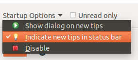
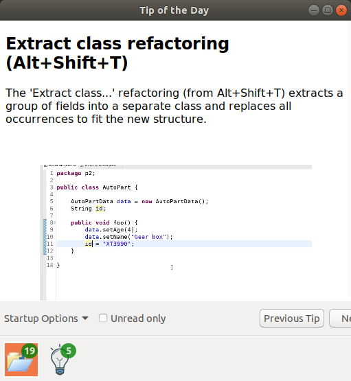

Views, Dialogs and Toolbar

The following screenshot shows a tip of a day

You can open the Minimap by pressing CTRL+3 en typing "minimap".
The Minimap can also be opened through the Window menu by
selecting Show view / Other and then General /
Minimap:

- in Light theme:

- in Dark theme:

Editors
Debug
Preferences
Themes and Styling
General Updates
Display.post(Event) method. The Display.post(Event) method now supports simulating key events for non-US
keyboard layouts and the option to send key modifiers together with key characters in a single event.
Version of Batik included is update to 1.10 to fix CVE-2018-8013.
The native file system provider for Linux based operating system now provides millisecond precision and has improved performance. The old precision provided seconds precision: it contained no millisecond component, despite being in millisecond unit. The old precision can be restored by specifying the command line argument: -Declipse.filesystem.useNatives.modificationTimestampMillisecondsResolution=false.